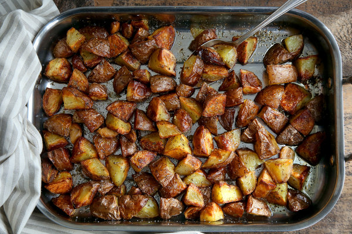

Roasted Potatoes
A great roasted potato side dish made with olive oil and herbs.

Ingredients
- Olive Oil - 1/8 cup
- Minced garlic - 1 tablespoon
- Dried Basil - 1/2 teaspoon
- Dried Marjoram - 1/2 teaspoon
- Dried dill weed 1/2 teaspoon
- Dried Dill Weed - 1/2 teaspoon
- Dried Thyme - 1/2 teaspoon
- Dried Oregano - 1/2 teaspoon
- Dried Parsley - 1/2 teaspoon
Directions
- Step 1
- Preheat oven to 475 degrees F (245 degrees C).
- Step 2
-
In a large bowl, combine oil, garlic, basil, marjoram, dill weed, thyme, oregano, parsley, red pepper flakes, and salt. Stir in potatoes until evenly coated. Place potatoes in a single layer on a roasting pan or baking sheet.
- Step 3
-
Roast for 20 to 30 minutes in the preheated oven, turning occasionally to brown on all sides.